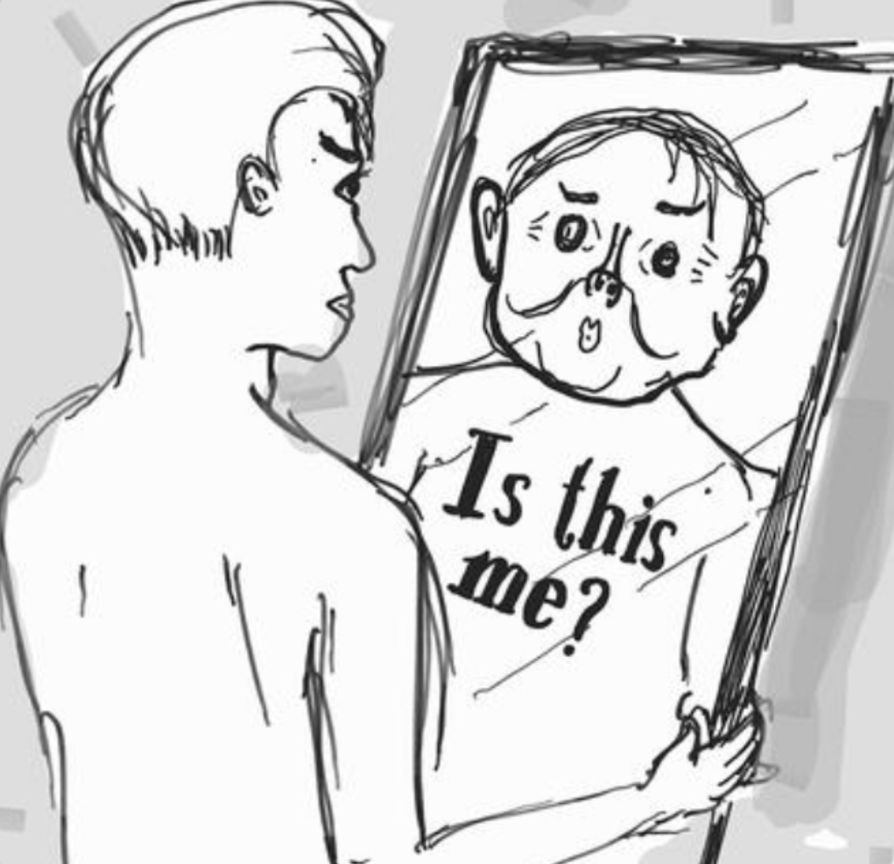

TV Psychology
Abby Littman Through a Psychological Lens
Understanding body dysmorphia and eating disorders through one of Ginny and Georgia's most complex teen characters.
Understanding body dysmorphia and eating disorders through one of Ginny and Georgia's most complex teen characters.

Abby Littman is one of the most complex teen characters in Ginny and Georgia. Beneath her sarcastic wit and confident presence lies a series of behaviors that point toward deeper psychological struggles.
By examining her patterns through the lens of psychology, we can better understand the mechanics of body dysmorphia and eating disorders, and how these conditions operate beneath the surface.
This article discusses body dysmorphic disorder, eating disorders, and related mental health topics. If you or someone you know is struggling, please reach out to a mental health professional or the National Eating Disorders Association helpline.
Body Dysmorphic Disorder, or BDD, involves a persistent and intrusive preoccupation with perceived flaws in appearance. These flaws are often unnoticeable to others or appear minor, yet they dominate the individual's thoughts and behaviors.
For Abby, casual scenes often reveal her checking her reflection repeatedly or adjusting her posture and clothing in subtle but deliberate ways.
The human brain contains a region called the visual processing network that works closely with emotional regulation areas. In individuals with BDD, there can be heightened activation in visual detail processing regions, meaning minor imperfections become magnified.
In practical terms, this means a small blemish or a perceived lack of symmetry can dominate thoughts for hours.
These patterns are not simply vanity but are part of a neurological loop between perception, attention, and emotional response. Individuals may also engage in grooming, camouflage, or repeated comparisons to others. These behaviors often begin in adolescence and may include mirror avoidance or constantly seeking reassurance.

Compulsive body checking is a recognized behavior connected to both BDD and certain eating disorders. It manifests as:
These actions may temporarily ease anxiety yet strengthen dissatisfaction over time.
Eating disorders such as bulimia nervosa and restrictive eating often develop alongside BDD. The two share common psychological drivers, including perfectionism and heightened self-monitoring.
When Abby skips meals or pushes food around on her plate, she engages in a form of body control that temporarily reduces anxiety. The prefrontal cortex, which is responsible for planning and self-control, can become locked into cycles where eating behavior is tied to an internal standard of appearance.
Over time, these behaviors can shift from occasional coping mechanisms to deeply entrenched rituals. This shift is reinforced by the brain's reward system, which releases dopamine during moments of perceived "success" in controlling weight or appearance.
Many individuals who struggle with disordered eating also experience distorted body image, and dissatisfaction often fuels restrictive or compensatory behaviors.
Media frequently promotes a "thin ideal" as the standard for attractiveness. Exposure to this ideal often leads viewers to compare themselves to unrealistic models and can trigger body dissatisfaction and maladaptive eating behaviors.
Social media can amplify this effect. Appearance-focused platforms and trends like "thinspiration" or "fitspiration" encourage social comparison and self-objectification, increasing the risk of negative body image and disordered eating.
Adolescence is a period when the brain's social reward system becomes highly sensitive. For someone like Abby, who moves through an environment where comments on appearance are common, social feedback can act as a psychological accelerant.
Compliments or criticisms do not fade quickly from her mental record. Instead, they become reference points for future self-judgment. Research shows that adolescents with body image concerns often develop a stronger link between social approval and self-worth, making them particularly vulnerable to external feedback.
Perfectionism is not only a personality trait but also a cognitive pattern characterized by rigid internal rules. Abby often seeks control in an unpredictable social landscape by setting exacting appearance standards for herself.
This tendency can be tied to activity in the anterior cingulate cortex, a brain region involved in error detection. When this system is overactive, it produces a constant sense of something being "off," even if no objective flaw exists.
Adolescents like Abby are still forming cognitive and emotional patterns related to control and identity. Repeated behaviors such as mirror checking or meal avoidance may function like rituals that reduce anxiety in the short term yet deepen those same anxieties over time.
Understanding the interplay of BDD symptoms, media influence, and disordered eating behaviors clarifies why her actions feel both habitual and psychologically charged.
Abby's behavior reveals more than teenage insecurity. Her mirror-focused habits, appearance control, and potential internal pressure reflect recognizable psychological phenomena.
By unpacking these underlying mechanisms, viewers can better understand why these behaviors occur and how they relate to broader issues of mental health and representation in media.